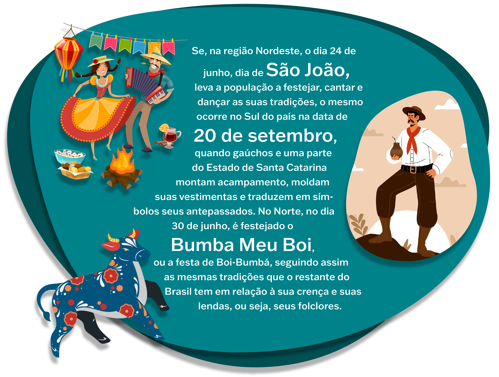
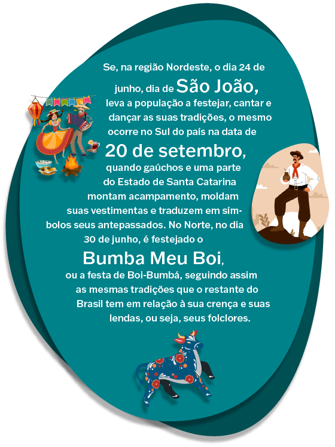
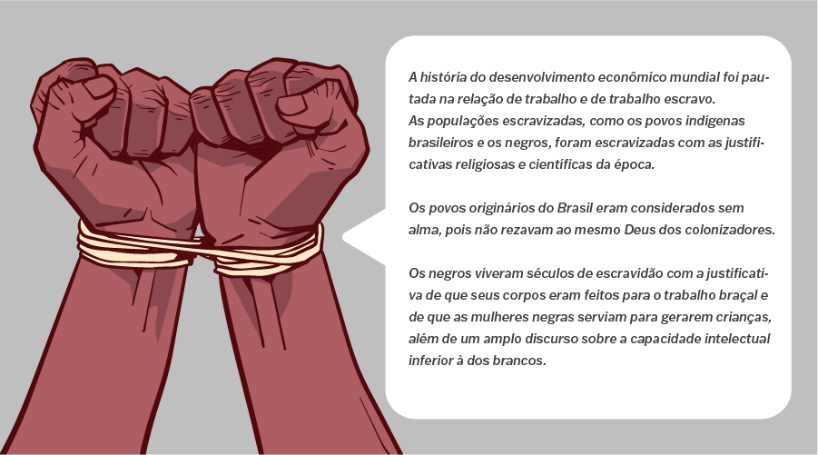
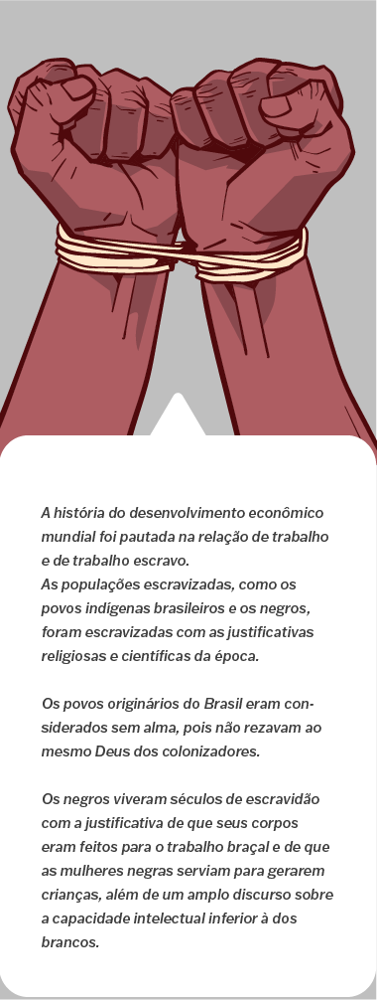

Nesta parte do conteúdo, continuaremos a tratar de um assunto muito importante e “delicado”: o racismo. Para isso, abordaremos um acontecimento lamentável, o caso de racismo vivenciado pelo jogador de futebol Vinicius Júnior, na partida entre Real Madrid e Valência, no dia 21 de maio de 2023, na Espanha, além dos episódios de xenofobia e violência apresentados na Copa do Mundo do Qatar, em 2023.
Nesse caso, houve racismo, também chamado de fenômeno social, pois é um elemento real, sentido por parte da população e cometido por outra parte cotidianamente. Fenômenos sociais são, portanto, acontecimentos que interferem na sociedade e afetam os indivíduos enquanto sujeitos. O racismo é uma questão social e histórica que ainda permanece em nossa sociedade, atingindo muitos de nós. As situações de racismo são muito frequentes, sendo necessário discutir e combater esse contexto de forma consciente e efetiva.
Vamos refletir sobre o ocorrido com o jogador Vinicius Júnior e a importância de contribuirmos para a igualdade racial e o respeito, a fim de desenvolvermos uma sociedade mais humana e igualitária. O jogador de futebol Vinicius Júnior foi chamado de “macaco” por parte da torcida do Valência, o que remete ao crime de racismo, por inferiorizar a sua condição de ser humano à condição de animalização. Esses torcedores foram denunciados pelo Ministério Público de Valência por crime de ódio contra o jogador. No decorrer do jogo, Vini Júnior apontou para a torcida que o insultava e isso gerou a interrupção da partida. O conflito ficou maior quando jogadores do time adversário o cercaram, o que acabou gerando brigas e muitas discussões. Vini Júnior acabou sendo expulso do jogo. Para compreender o assunto, observe a imagem a seguir.
No centro da imagem, o jogador de futebol Vinicius Júnior aponta para a torcida e é segurado por um adversário. Ao fundo, há mais dois jogadores olhando em direção à torcida.
Pesquise “Lei do Racismo” na internet, pelo site do Tribunal de Justiça do Distrito Federal e dos Territórios. Aproveite também para pesquisar a reportagem “Racismo contra Vinicius Júnior: veja tudo sobre o caso”, disponível no site do GE, ou acesse as referências disponíveis no fim deste material.
A palavra “cultura” é utilizada com bastante frequência nos diálogos atualmente e com certeza você já a ouviu várias vezes. Cultura, etnocentrismo e relativismo cultural são conceitos muito presentes nos estudos da sociologia. Mas, para entender o que é etnocentrismo e relativismo cultural, é preciso primeiro estudar o que é a cultura.
Seguramente você já presenciou a palavra cultura sendo empregada em diversos diálogos em grupos, na mídia, em livros etc., mas poucos explicam sobre qual sentido estão se referindo.
A palavra “cultura” sofreu modificações ao longo dos séculos. No passado, ela era constantemente empregada para distinguir indivíduos que não eram considerados “cultos” daqueles que carregavam características de “cultura”. Eram considerados “cultos” indivíduos que liam determinados livros, acessavam cursos de graduação nas universidades, ouviam músicas específicas, como a erudita.
Logo, os “não cultos” eram as camadas populares que interrompiam os estudos formais, ouviam músicas populares, como samba, funk, rap etc. Esses hábitos, então, poderiam ser interpretados como uma distinção e separavam pessoas em “mais” e “menos” cultas.
Ao longo dos estudos da sociedade, observou-se que cada nação carrega hábitos, crenças religiosas e folclóricas, assim como costumes alimentares, de vestimentas, músicas tradicionais que caracterizam determinados grupos étnicos, forma de se expressar diante ao mundo, como a língua falada, as gírias e os sotaques. Esse grupo de características expressa, identifica e revela uma cultura. As diferentes culturas estão presentes no dia a dia e formam as etnias . Se, anteriormente, falou-se na história que as pessoas eram distintas entre raça, hoje já é perceptível que as diferenças estão além da cor da pele. Dentro de uma nação, é possível perceber uma diversidade de etnias, sendo, assim, uma nação multiétnica. Um exemplo é o próprio Brasil. Dentro dele, são encontradas várias etnias, como os indígenas, africanos e europeus. O gráfico a seguir demonstra como esses conceitos estão interligados e como se pode diferenciá-los:
Gráfico/infográfico com três círculos entrelaçados entre si: etnia, povo e população, formando ao centro a nação. População: corresponde ao conjunto de todos os habitantes de um país, estado, bairro ou mesmo de todo o mundo. Exemplo: população rural, população urbana etc. Povo: população multiétnica, que participa da construção de um país. Nação: engloba a população, a etnia e o povo, e que enxerga a soberania em um território de um governo próprio. É, portanto, um conjunto de etnias. Etnia: grupo de pessoas que compartilham a mesma cultura, as mesmas tradições, os costumes, os símbolos etc.
Pode-se observar essa multiétnica nos gostos e costumes musicais, como o rap e o funk nas comunidades brasileiras, que mostram como os brasileiros se distinguem nas particularidades grupais. Esses dois ritmos musicais demonstram ao mundo características das populações que vivem em países como o Brasil, que conseguem por meio da música expressar o que sentem diante do convívio com a família, com o Estado, o amor ao próximo e inclusive suas reivindicações sociais.
Veja a seguir o exemplo da letra da música “Pequenas alegrias da vida adulta”, interpretada pelo cantor Emicida, um dos grandes nomes do rap do Brasil, nascido e criado em uma comunidade de São Paulo:
É um sábado de paz onde se dorme mais
O gol da virada quase que nos rebaixa
Emendar um feriado nesses litorais
Encontrar uma Tupperware que a tampa ainda encaixa
Mais cedo brotou alecrim em segredo
Tava com jeito que ia dar capim
Ela reclama do azedo, recolhe os brinquedo
Triunfo hoje pra mim é azul no boletim
Uma boa promoção de fralda nessas drogaria
O faz me rir na hora extra vinda do serviço
Presentes feitos com guache e crepom lembra meu dia
Penso que os sonhos de Deus devem ser tipo isso.
Emicida consegue traduzir por meio da poesia de suas músicas a realidade de boa parte da população brasileira trabalhadora que vive nas comunidades das grandes cidades. O rap, o funk e o samba têm essa característica em comum. É possível, desta forma, afirmar que a cultura não pode ser mensurada, medida como “mais” ou “menos”. É preciso compreender e analisar suas formas e diversidades sem sobrepor julgamentos. Cultura é, portanto, um grande grupo de características, que se assemelham e se diferem na diversidade de costumes, hábitos, crenças, valores e mitos que diferentes povos carregam pelo mundo.
Reflita agora sobre como as tradições e os costumes dos brasileiros são diversos dos japoneses, coreanos, chineses, ou seja, da cultura oriental. A diversidade ocorre não somente nas características físicas, como o formato dos olhos, mas em formas de se vestir, nos hábitos alimentares, nas crenças e mitologias ligadas à religiosidade, na forma de se organizar em sociedade e também como se enxerga o mundo.
Esse exemplo com a cultura oriental remete a um grupo de indivíduos bem distante geograficamente, mas é possível refletir também sobre as diversidades deste continente, dos países que partilham da América do Sul, analisando, por exemplo, os hábitos colombianos, a contribuição dos povos incas para a construção da cultura dos peruanos, considerando, assim, como dentro do mesmo território continental há tantas variações culturais.
Se você tiver interesse em ler mais sobre o compositor e cantor brasileiro Emicida, pesquise a biografia completa do cantor acessando o “Blog Emicida”, nas plataformas de streaming de áudio.

Três mulheres posando e sorrindo para uma foto. A primeira mulher é negra, com seu cabelo crespo solto e está utilizando uma camisa em tecido jeans na cor azul. A mulher no meio da fotografia é branca, e seu cabelo está raspado, não podendo diferenciar a cor e o tipo de cabelo. A última mulher da foto é branca e usa, cobrindo seus cabelos, um lenço na cor vermelha, com um detalhe em preto largo, impossibilitando a visualização de qualquer parte de seu cabelo.
É possível relacionar diretamente o termo “diversidade” às diferenças culturais do Brasil e dos seus habitantes. A divisão espacial entre centro, norte, nordeste, sudoeste, oeste e sul é certamente também um marcador cultural, de comportamento, de diversidade na língua portuguesa, de clima e hábitos dos povos que vivem aqui. Essas diferenças podem ser representadas pelas festas típicas de cada região do país.
 Se, na região Nordeste, o dia 24 de junho, dia de São João, leva a população a festejar, cantar e dançar as suas tradições, o mesmo ocorre no Sul do país na data de 20 de setembro, quando gaúchos e uma parte do Estado de Santa Catarina montam acampamento, moldam suas vestimentas e traduzem em símbolos seus antepassados. No Norte, no dia 30 de junho, é festejado o Bumba Meu Boi, ou a festa de Boi-Bumbá, seguindo assim as mesmas tradições que o restante do Brasil tem em relação à sua crença e suas lendas, ou seja, seus folclores.

O racismo é uma prática discriminatória baseada na raça ou etnia do indivíduo. Como referido anteriormente, o termo raça é considerado antiquado, obsoleto, dentro dos estudos sociológicos, pois pondera a cor da pele, considerando somente as raças branca, preta e amarela.
É preciso destacar, portanto, que o conceito de raça é constantemente ressignificado pelos movimentos sociais.
Há, nos serviços de streaming de áudio, o podcast “Mano a Mano: Mano Brown recebe Djamila Ribeiro”, que aprofunda a abordagem sobre os movimentos sociais, trabalhando os termos “raça” e “etnia”. Pesquise sobre ele para saber mais.
A palavra “etnia” engloba diferentes povos, diversidades religiosas, culturais e territoriais, e não a pigmentação da pele.
O racismo é um conceito presente no cotidiano das pessoas, sendo, portanto, a crença ou convicção sobre a superioridade de uma raça ou determinadas raças sobre as demais, com base em diferentes motivações, em especial as características físicas e outros traços do comportamento humano. Dentro do sistema racista, o valor do ser humano é determinado pela sua pertinência a uma nação racial coletiva.
Portanto, o racismo é uma opinião sobre uma raça humana, depreciando as demais. É uma atitude frequentemente acompanhada de violência contra uma coletividade. Dessa forma, existe uma discriminação, seja de raças, seja pela religião, seja pela cor, seja pela etnia etc. (RABELLO, 2014).
No Brasil, duas grandes mulheres negras que se dedicam a trazer ao debate o sofrimento da população negra com o racismo no cotidiano são a filósofa, professora e escritora Djamila Ribeiro, que tem seu nome reconhecido justamente a partir do debate da desigualdade da mulher preta brasileira, e a cantora e compositora Elza Soares. Djamila teve que superar o racismo dos professores brancos, dentro da universidade, que desacreditaram que seus livros seriam considerados literatura. Elza sempre afirmou que veio da música a coragem de encarar a sociedade machista e racista, que via na sua figura apenas a mulher de um esportista brasileiro. Elza Soares escreve sobre a luta e o cotidiano do trabalhador negro na letra da música “A carne” (1998):
A carne mais barata do mercado é a carne negra
Só-só cego não vê
Que vai de graça pro presídio
E para debaixo do plástico
E vai de graça pro subemprego
E pros hospitais psiquiátricos
A carne mais barata do mercado é a carne negra
Dizem por aí
A carne mais barata do mercado é a carne negra
A carne mais barata do mercado é a carne negra
A carne mais barata do mercado é a carne negra
Que fez e faz história
Segurando esse país no braço, meu irmão
O cabra que não se sente revoltado
Porque o revólver já está engatilhado
E o vingador eleito
Mas muito bem intencionado
Ao longo da história, a humanidade vive na relação de trabalho com quem a contratada. Pode-se até mesmo afirmar que a história da humanidade está dentro da história das formas de trabalho no mundo. Essas relações entre trabalho, contrato e sobrevivência passaram por diversas mudanças e, assim como as autoras citadas relatam, etnias foram exploradas nessas relações ao longo da história.
 A história do desenvolvimento econômico mundial foi pautada na relação de trabalho e de trabalho escravo.
As populações escravizadas, como os povos indígenas brasileiros e os negros, foram escravizadas com as justificativas religiosas e científicas da época.
Os povos originários do Brasil eram considerados sem alma, pois não rezavam ao mesmo Deus dos colonizadores.
Os negros viveram séculos de escravidão com a justificativa de que seus corpos eram feitos para o trabalho braçal e de que as mulheres negras serviam para gerarem crianças, além de um amplo discurso sobre a capacidade intelectual inferior à dos brancos.
O próximo tópico abrange essa relação de colonizadores, colonizados e escravizados, identificando na história do Brasil a formação do preconceito e da discriminação diante alguns grupos populacionais e suas consequências até o presente.
O Portal Geledés Instituto da Mulher Negra tem um vasto conteúdo, que pode ajudá-lo a aprofundar o estudo sobre racismo e a identificar a injúria racial. Além disso, se você quiser conhecer mais as obras da escritora Djamila Ribeiro, indicamos os livros Pequeno Manual Antirracista (2019) e Quem Tem Medo do Feminismo Negro (2018).
A Copa do Qatar expôs ao mundo a realidade de um país que permite atitudes racistas, xenofóbicas e homotransfóbicas. Notícias espalharam-se relatando casos como exploração de trabalho. Além de alojar os trabalhadores imigrantes em locais insalubres, eram confiscados seus passaportes e pagos salários extremamente baixos. Outras ações também chamaram a atenção, como a declaração do embaixador da Copa do Qatar, em que deixou evidente que os homossexuais seriam tolerados, já que a homossexualidade é crime no país.
Infelizmente, a história da copa do mundo está repleta de casos de racismo, ocorrendo desde insultos verbais e gestos ofensivos até atos de violência. Jogadores e torcedores de diferentes raças e etnias já foram vítimas desse tipo de preconceito no torneio. Vamos, então, acabar com o preconceito? Acesse o jogo a seguir e pratique.
A copa do mundo é o maior evento esportivo do planeta, reunindo milhões de pessoas em torno do futebol. No entanto, apesar de toda a paixão e a emoção que o torneio desperta, a competição não está imune ao racismo, um problema que ainda persiste em muitos países.